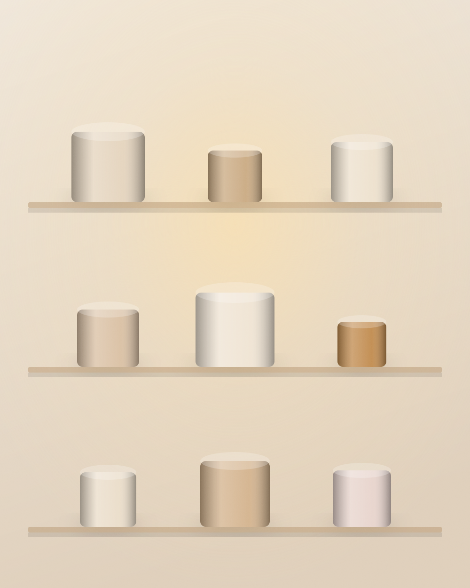
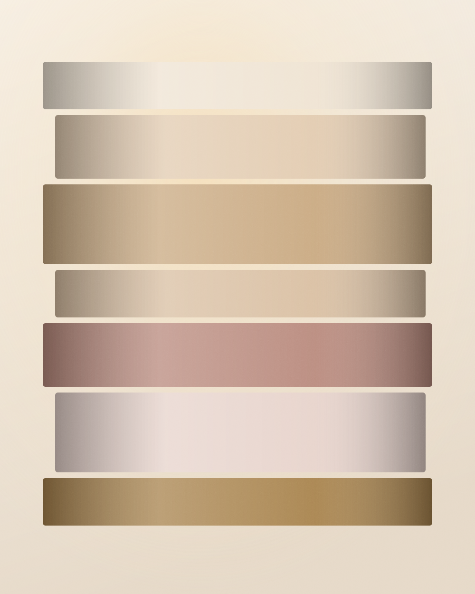

L’atelier
Vera Candles nasce da un banco di lavoro in cortile e dall’idea che una candela possa essere un oggetto da tenere, non da consumare. Oggi lavoriamo in un atelier a Milano e facciamo ancora tutto qui dentro: la cera, il profumo, la colata, la rifinitura, la scatola.

La storia
La prima serie era in paraffina e profumo sintetico, come quasi tutto quello che si trova. Bruciava male, il profumo spariva dopo mezz’ora e la superficie si crepava. Abbiamo buttato tutto e ricominciato dalla materia: soia biologica, cera d’api, essenze vere.
Da lì la regola è rimasta una sola: se un pezzo non esce come deve, non esce. Lo rifondiamo e ricominciamo. Il costo di quegli scarti è dentro il prezzo di quelli che vi arrivano, ed è giusto così.
Il processo
Soia biologica e cera d’api italiana, fuse a 68°. La proporzione cambia per ogni formato: più cera d’api nelle sculture, più soia nei vasi.
Costruiamo la piramide olfattiva da zero, con oli essenziali e assolute. Ogni formula passa da otto a quindici prove prima di entrare in collezione.
A mano, un pezzo per volta, alla temperatura esatta. I degradé richiedono un solo strato al giorno: sette giorni per sette strati.
Da cinque a nove giorni al buio. È qui che il profumo si lega alla cera: saltare questo passaggio significa una candela che non profuma la stanza.
Scanalature incise a mano, bordi levigati, foglia d’oro a pennello. Poi il numero dell’edizione, inciso sul fondo insieme alla firma.

Le nostre regole
È un derivato del petrolio: brucia sporco e annerisce il vaso. Costa un decimo della soia, e si vede.
Nessun terzista, nessuna linea automatica. Se una collezione finisce, la rifacciamo quando siamo pronti.
Solo cotone puro o legno di ciliegio, mai anime metalliche. Fiamma stabile, aria pulita.
Un pezzo con una bolla o una crepa non viene venduto scontato: torna nel crogiolo e si ricomincia.
«Volevamo un oggetto che, spento, restasse bello sul tavolo. Tutto il resto è venuto da lì.»
Vera · fondatrice